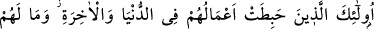
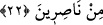

öldürdüler” demektir. Bu sûrede ise nekre olarak “biğayr-i hakk” buyurulmasının
sebebi, “sözkonusu edilebilecek haklardan hiçbiri olmaksızın öldürdüler” demektir.
Onlar, “insanlardan adâleti emredenleri de öldürmektedirler.” Ebû Ubeyde bin
Cerrâh (r.a.) şöyle anlatıyor: “Dedim ki: Ya Rasûlallah, insanların kıyâmet gününde en
şiddetli azaba çarptırılacak olanı kimdir?” Peygamberimiz (s.a.) şöyle buyurdular:
“Bir peygamberi, yahut iyiliği emreden, kötülüğü yasaklayan bir insanı
öldürendir.” Sonra bu âyeti okudu ve şöyle buyurdu:
“Yâ Ebâ Ubeyde! İsrâiloğulları bir günün başında sadece bir saat içerisinde kırk
üç peygamberi öldürdüler. Bunun üzerine İsrâiloğulları’nın âbidlerinden yüz on iki
adam kalkıp bu kâtillere iyiliği emrettiler, kötülükten vazgeçirmeye çalıştılar, o
günün sonunda bunların da hepsini birden öldürdüler.”[16]
“İşte bunlara pek acıklı bir azabı haber ver!” Devamlı sûrette ağrıtan, sancıtan,
kıvrandıran bir azabı haber ver. Aslında, iyi haberlerin verilmesine “müjde”
denilmesine rağmen, Cenâb-ı Hak bunların kötü amellerine ateşi haber vermiş ve istihzâ
tarîkiyle buna “azabı
müjdele”
buyurmuştur:
Bu,
“şunların
birbirleriyle
selamlaşmaları, baş ağrıtan bir darbedir” denilmesi gibidir.
22. İşte bunlar dünyada da âhirette de çabaları boşa giden kimselerdir. Onların
hiçbir yardımcısı da yoktur.
Bu çirkin sıfatlarla tanımlananların dünya ve âhirette bütün amelleri boşa gitmiştir.
Zâten bunları iyilik ve güzellik olarak yapmamışlardı. Bu sebeple iki dünyada da iyi bir
eser bırakamadılar. Dünyada arkalarında rüsvaylık kalmıştır. Âhirette ise onları pek
acıklı bir azap beklemektedir.
“Bunların yardımcıları da yoktur.” Bunları Allah’ın azabından ve başlarına
getireceği belâdan kurtaracak bir kimse iki dünyada da yoktur.
“Bunlar için yardımcılar yoktur.” buyurulurken “yardımcılar” diye çoğul sîgası
kullanılması, karşılığında söylenebilecek her söze cevap olması içindir. Diğer bazı
âyette de “zâlimler için, hiçbir yardımcı yoktur” mânasına “yardımcılar” kelimesi çoğul
olarak kullanılmıştır.
Bu âyet, iyiliği emredip, kötülüğü yasaklayanları öldürenleri zemmetmektedir. Böyle
bir toplum, ne kötü bir toplumdur! İnsanlar arasında adâleti ayakta tutmayanlardan
meydana gelen bir toplum da, ne kötü bir toplumdur! İnsanlardan adâleti emredenleri
öldürenler, ne kötü insanlardır!
Sakın hiçbir zaman adâletten ve insaftan ayrılmayasın. Cevru zulümden ve yoldan
sapmaktan sakınasın. Allah’ın emirlerine açıkça sarıl, yasaklarından sakın ve tuttuğun